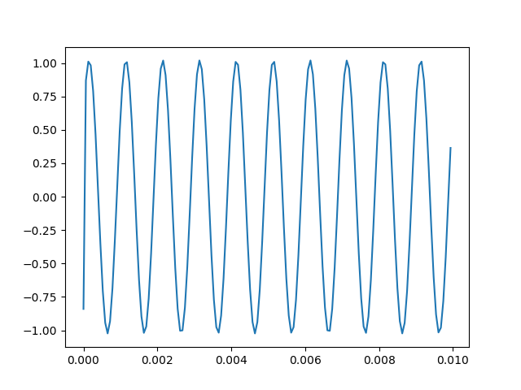
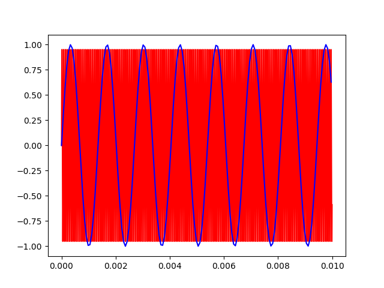
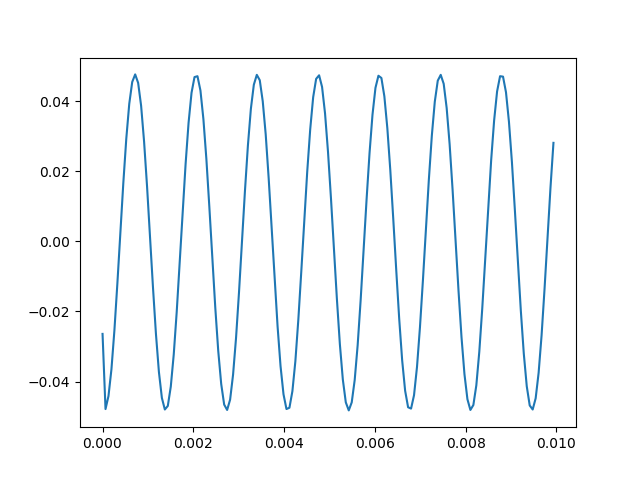

Sample at 15.258 kS/s.
Use the output to generate a 15.258 kHz signal.
My acquired signal should be DC.
Result:
Sample at 15.258kS/s.
Use the output channel to generate a 1kHz wave.
Snag first .01 seconds. With period of 1ms, I should see 10 periods.
Result: Looks pretty good.

Sample at 15.258kS/s.
Use the output channel to generate a 16kHz wave.
Expected result if I plot the first .01 seconds of time domain data (background is the actual signal):

Actual result:

As you can see, the aliased signal is clearly there, but attentuated by a factor of 200.